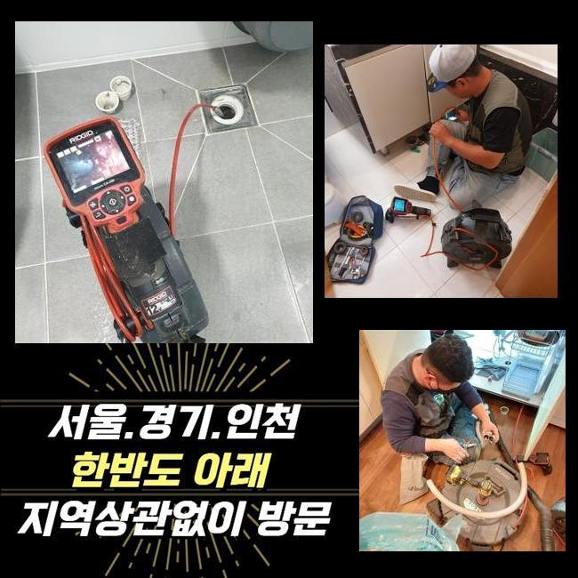
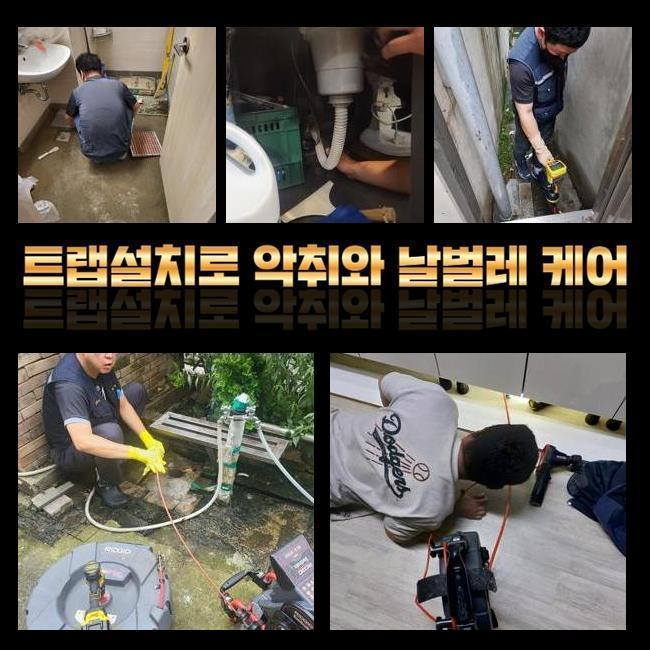
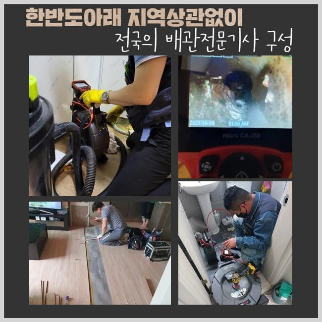
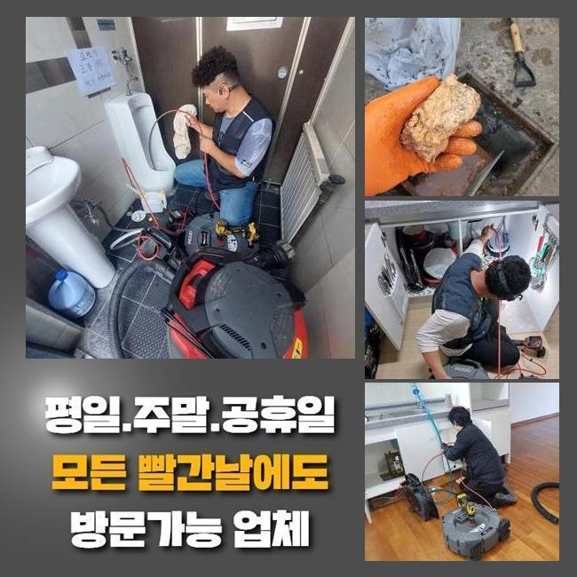
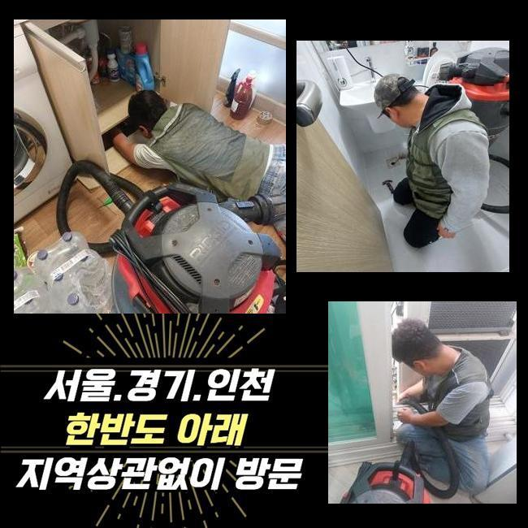
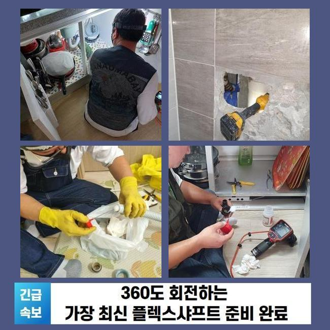

🏠 여주 싱크대역류 이천 하수구뚫어주는곳 출장수리
용인시 처인구 배관막힘 전문 시공 후기

📋 작업 개요
- 위치: 용인시 처인구, 수원시 영통구, 화성시 동탄
- 서비스 유형: 배관막힘, 누수수리, 고압세척, 내시경점검
- 작업 일시:
- 업체명: 하수구수사대 (010-5615-2118)
🔍 문제 상황
여주 싱크대역류 이천 하수구뚫어주는곳 출장수리
한 고객님으로부터 접수를 받고서 고객님이 계신 곳으로 방문드렸습니다
집합건물의 형태였죠 바깥의 배관에서 역류들이 발생되어 연락하셨는데요
현 상태가 중한 것으로 보고 조속하게 검수를 하기위한 진단을 진행하니 지어진지 꽤 지난 건물에서 메인관로의 막힘때문에 피해들이 적잖이 크다는걸 알게되었어요
먼저 내시경장비로 관로를 구석까지 살펴보니 여러가지의 흡착물들이 공동배수관에서 축적되어 버린 걸 확인했어요
하수구배수오류로 역류증상들이 등장한 내부모습을 확인했죠
막힘 이외의 증상도 야기된걸로 보았을때 오랫동안 여러 찌꺼기를 청소하지않아서 야기된 문제들이였는데요

🔎 원인 분석
💡 전문가 진단: 정밀 진단 장비를 사용하여 슬러지의 고착 여부를 판명하고 타격/세척 작업을 실시했습니다.
간단히 원인까지 눈여겨보았더니 켜켜히 층을 이룬 잔해때문에 배수가 안되는 현상이 생겨난 걸로 예상되었지만 정확한 체크를 위해서 내시경을 이용키로 결정했답니다
내시경으로 관로를 살피니 꺾이는 부분에도 석회가 누적되어있었습니다
딱딱하게 굳어진 슬러지는 샤프트기기를 써주는 것이 옳지만 크기도 컸으며 이물도 상당하여 고압청소 방법을 채택하기로 결론지었죠
고수압으로 하수도를 세척해주는 과정들을 이행할 땐 수직관로에 축적되어 있는 것도 제대로 세척해주었습니다
그저 간단한 해결이 가능할때 자주 가용하는 기기가 아니라 집수정이라든지 샤프트기기를 사용했지만 개선이 미비할 경우 빈번히 꺼내는 장비인데요
이러한 세척 진단을 수행하는 과정에서는 배수관의 구조들까지 고려해서 위치특성마다 고압의 세기들을 조절하여 가해주는것이 좋겠습니다
만약 고압세척을 제거에 무리가 없는 기름때나 약한 배수관에 쏴주면 균열의 염려가 있으며 더 나아가 경제적 부담들도 올라가므로 배보다 배꼽이 더 커지는 경우들도 존재합니다
고압수청소는 강한 분사를 통해 기름들을 청소해주는 절차로 집수정에서 점차 진행했죠

🔧 작업 과정
배수관의 꺾여지는 부분과 표면엔 상당한 고착물이 존재하고 있던 상태였죠
간소한 과정이 아니기에 해당 작업에 있어서 장시간에 걸쳐 소요되지만 지속적으로 진행시켜 참된 결과물들을 자아냈죠
하수라인에 이물들이 축적된 현 상태가라면, 고수압으로 출수부분까지 작업하는게 권장드리는 해결방법이라 할 수 있어요
방치할 시 예상못한 해당 피해가 생겨날지 모르기에 증상에 걸맞는 조치들이 필요하겠습니다
그 이후에 내측을 내시경기기로 검수하여 예상할 수 없는 위험 사항을 확인해주었어요
남아있는 슬러지등과 굳어버려 탈락된 석회들까지 존재하여 석션장비로 제거해 마무리를 해드렸어요
그런 다음에 라인별 하수관을 진단해주었어요 찾아뵈었던 현장의 경우 구분건물이고 오래도록 해당 피해가 나타난 장소였던 탓에 가지배관으로도 해당 피해가 번져있었습니다
이 과정에서 문제들을 잠재우고 확인하니 이쪽 말고는 불편이 없으시다고 전달해주셨지만 진단은 이행했어요
청소들이 완료되면 예기치못한 문제들을 막고자 연결된 설비의 정비들을 이행했죠
메인관로의 배수를 위한 고수압의 방식은 주기적으로 수행해 메인관로의 수명을 늘리고 손상이슈나 누수되는 증세를 예방합니다
내시경의 경우 기름을 선명하게 확인가능한 기기로 문제 까닭들을 파악하는것에 필히 요구됩니다
물이 안빠져서 전문가를 찾는 시점에 체크해봐야되는 사안이 내시경카메라를 쓰는지 따져보세요


✅ 작업 완료
작업한 뒤 동일 해당 피해가 생겨나면 AS를 실시해 빠르게 대응할 수 있도록 작업들을 시행할게요
석션도구와 샤프트장비 전동 스프링을 써서 이물질들을 꼼꼼하게 작업하고 전체적인 클리닝을 진행하고 있어요
작업하며 생겨나는 잔재는 고압수청소로 정리하고 마지막으로 각 라인에서 관로의막힘을 해소시켜드려요
그저 잔해를 청소해나가며 배수관의 환경자체를 청결할 수 있게 유지하는 것을 목표로 작업해드리겠습니다



⚠️ 하수구 배관 막힘 예방 및 관리 가이드
- ✅ 머리카락, 비닐, 물티슈 등 물에 분해되지 않는 이물질은 절대 흘려보내지 마세요.
- ✅ 기름기 많은 식기는 설거지 전 키친타올로 먼저 기름때를 닦아내세요.
- ✅ 주기적으로 배수구에 뜨거운 물을 가득 부어주어 유지방 고착을 방지하세요.
- ✅ 작업 후 1년 이내 재발 시 무상 A/S 보증 서비스를 제공합니다.
💡 핵심 정리
- 확실한 장비 작업(내시경 점검 및 샤프트 스케일링)으로 원인을 뿌리 뽑습니다.
- 작업 후 1년 이내에 동일한 부위 재발 시 100% 무상 A/S 서비스를 보장합니다.
- 서울 · 경기 · 인천 전 지역에 24시간 언제든 긴급 출동할 수 있도록 항시 대기 중입니다.
❓ 자주 묻는 질문 (FAQ)
🚨 용인시 처인구 배관막힘 문제로 고민이신가요?
정확한 원인 진단과 확실한 시공으로 재발 없는 해결을 약속드립니다.
24시간 긴급 출동 | 서울 · 경기 · 인천 전지역 | 1년 내 재발 시 무상 A/S